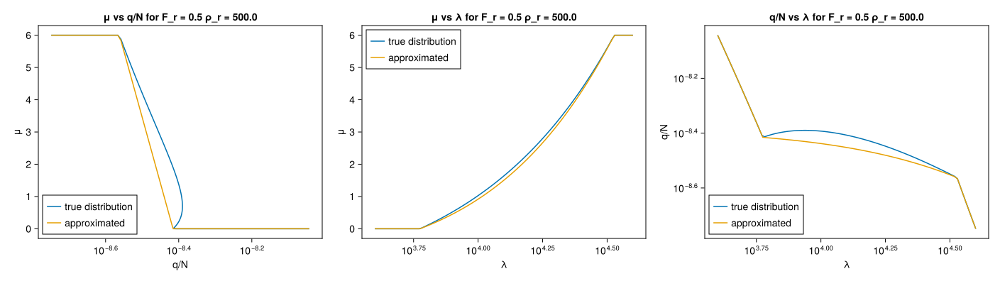
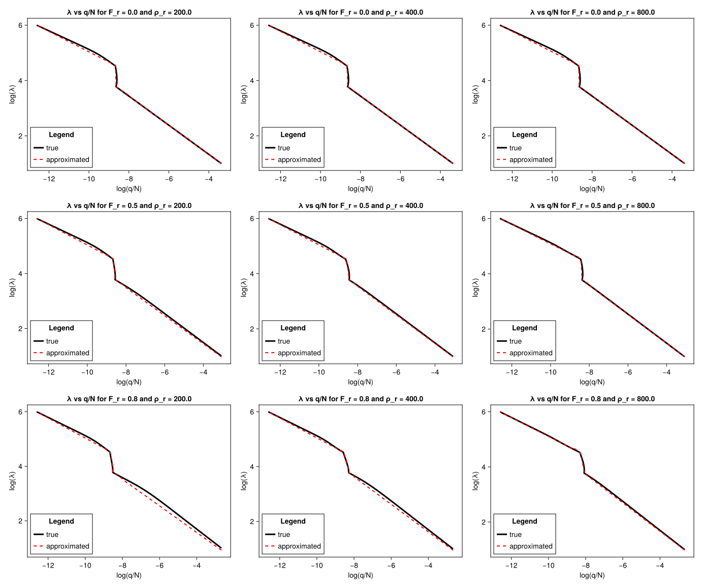
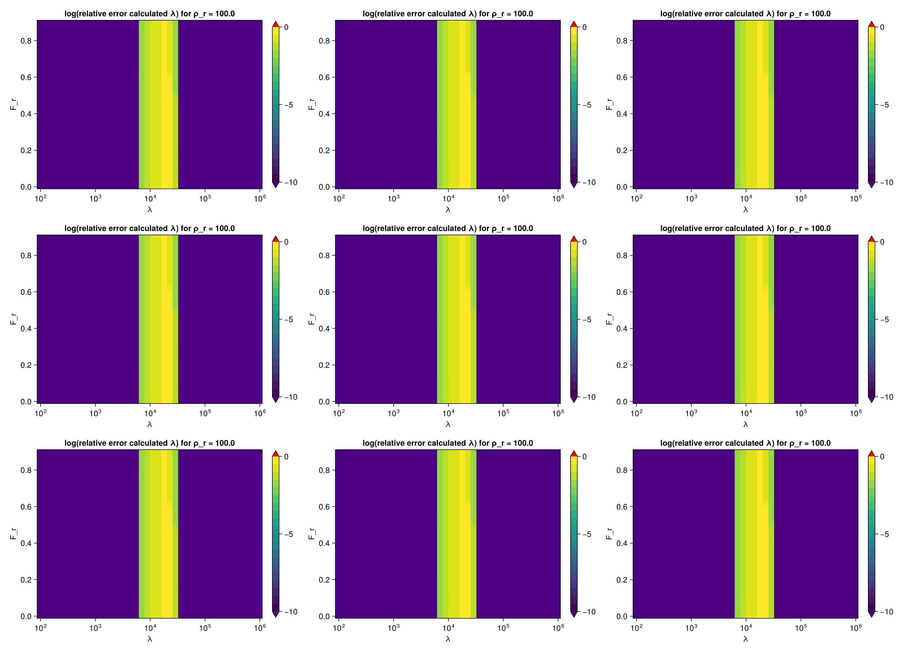
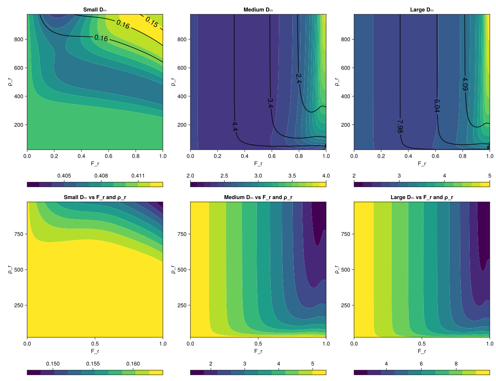
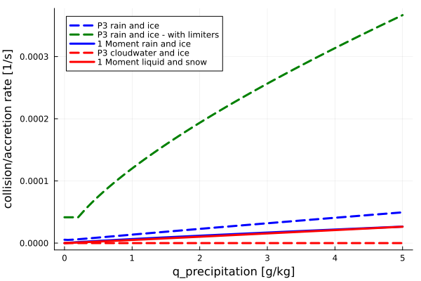
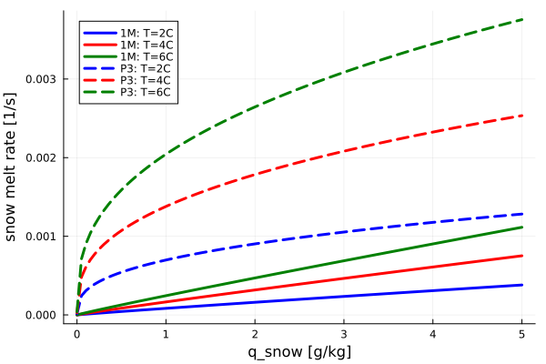
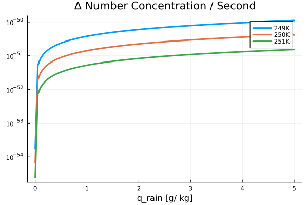
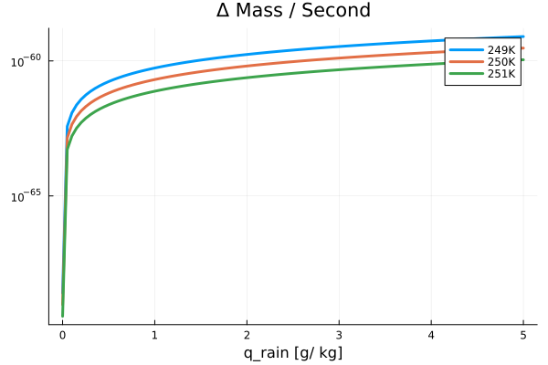

P3 Scheme
The P3Scheme.jl module implements the predicted particle properties (P3) scheme for ice-phase microphysics developed by [24]. The P3 scheme is a 2-moment, bulk scheme involving a single ice-phase category with 4 degrees of freedom: total mass, rime mass, rime volume, and number mixing ratios. Traditionally, cloud ice microphysics schemes use various predefined categories (such as ice, graupel, or hail) to represent ice modes, but the P3 scheme sidesteps the problem of prescribing transitions between ice categories by adopting a single ice category and evolving its properties. This simplification aids in attempts to constrain the scheme's free parameters.
The prognostic variables are:
- $N_{ice}$ - number concentration 1/m3
- $Q_{ice}$ - ice mass density kg/m3
- $Q_{rim}$ - rime mass density kg/m3
- $B_{rim}$ - rime volume - (volume of rime per total air volume: dimensionless)
where
- $Q_{ice} = \rho_a * q_{ice}$
- $Q_{rim} = \rho_a * q_{rim}$
- $\rho_a$ - density of air
- $q_{ice}$, $q_{rim}$ are respective specific humidities
TODO - At some point we should switch to specific humidities...
Assumed particle size relationships
The mass $m$ and projected area $A$ of particles as a function of maximum particle dimension $D$ are piecewise functions with variable thresholds described by the following table.
| particle properties | condition(s) | m(D) relation | A(D) relation |
|---|---|---|---|
| small, spherical ice | $D < D_{th}$ | $\frac{\pi}{6} \rho_i \ D^3$ | $\frac{\pi}{4} D^2$ |
| large, unrimed ice | $Q_{rim} = 0$ and $D > D_{th}$ | $\alpha_{va} \ D^{\beta_{va}}$ | $\gamma \ D^{\sigma}$ |
| dense nonspherical ice | $Q_{rim} > 0$ and $D_{gr} > D > D_{th}$ | $\alpha_{va} \ D^{\beta_{va}}$ | $\gamma \ D^{\sigma}$ |
| graupel (completely rimed, spherical) | $Q_{rim} > 0$ and $D_{cr} > D > D_{gr}$ | $\frac{\pi}{6} \rho_g \ D^3$ | $\frac{\pi}{4} D^2$ |
| partially rimed ice | $Q_{rim} > 0$ and $D > D_{cr}$ | $\frac{\alpha_{va}}{1-F_r} D^{\beta_{va}}$ | $F_{r} \frac{\pi}{4} D^2 + (1-F_{r})\gamma \ D^{\sigma}$ |
where:
- $D_{th}$, $D_{gr}$, $D_{cr}$ are particle size thresholds in $m$,
- $\rho_i$ is cloud ice density in $kg m^{-3}$,
- $\beta_{va} = 1.9$ is a dimensionless parameter from [25] (based on measurements of vapor diffusion and aggregation in midlatitude cirrus),
- $\alpha_{va} = 7.38 \; 10^{-11} \; 10^{6 \beta_{va} - 3}$ in $kg \; m^{-β_{va}}$ is a parameter modified for units from [25] in base SI units (also based on measurements of vapor diffusion and aggregation in midlatitude cirrus),
- $\rho_g$ is the bulk density of graupel in $kg \; m^{-3}$
- $\gamma = 0.2285$ ($m^{2 - \sigma}$) where
- $\sigma = 1.88$ (dimensionless), both from the aggregates of side planes, columns, bullets, and planar polycrystals in [26].
The first threshold is solely determined by the free parameters: $D_{th} = (\frac{\pi \rho_i}{6\alpha_{va}})^{\frac{1}{\beta_{va} - 3}}$. The remaining thresholds: $D_{gr}$, $D_{cr}$, as well as the bulk density of graupel $\rho_{g}$, and the bulk density of the unrimed part $\rho_d$ form a nonlinear system:
- $D_{gr} = (\frac{6\alpha_{va}}{\pi \rho_g})^{\frac{1}{3 - \beta_{va}}}$
- $D_{cr} = [ (\frac{1}{1-F_r}) \frac{6 \alpha_{va}}{\pi \rho_g} ]^{\frac{1}{3 - \beta_{va}}}$
- $\rho_g = \rho_r F_r + (1 - F_r) \rho_d$
- $\rho_d = \frac{6\alpha_{va}(D_{cr}^{\beta{va} \ - 2} - D_{gr}^{\beta{va} \ - 2})}{\pi \ (\beta_{va} \ - 2)(D_{cr}-D_{gr})}$
where
- $F_r = \frac{Q_{rim}}{Q_{ice}}$ is the rime mass fraction,
- $\rho_{r} = \frac{Q_{rim}}{B_{rim}}$ is the predicted rime density.
TODO - Check units, see in issue #151
Below we show the m(D) and a(D) regimes replicating Figures 1 (a) and (b) from [24].
include("plots/P3SchemePlots.jl")CairoMakie.Screen{SVG}

Assumed particle size distribution
Following [24], the scheme assumes a gamma distribution for the concentration of ice particles per unit volume based on particle size measurements obtained by [27] in tropical and midlatitude ice clouds and implemented by [28]:
\[N'(D) = N_{0} D^\mu \, e^{-\lambda \, D}\]
where:
- $N'$ is the number concentration in $m^{-4}$
- $D$ is the maximum particle dimension in $m$,
- $N_0$ is the intercept parameter in $m^{-5 - \mu }$,
- $\mu$ is the shape parameter (dimensionless),
- $\lambda$ is the slope parameter in $m^{-1}$.
We assume $\mu \ = 0.00191 \; \lambda \ ^{0.8} - 2$. Following [28] we limit $\mu \ \in (0,6)$. A negative $\mu$ can occur only for very small mean particle sizes$\frac{1}{\lambda} < ~0.17 mm$.
The model predicted ice number concentration and ice mass density are defined as
\[N_{ice} = \int_{0}^{\infty} \! N'(D) \mathrm{d}D\]
\[Q_{ice} = \int_{0}^{\infty} \! m(D) N'(D) \mathrm{d}D\]
Calculating shape parameters
As a next step we need to find the mapping between predicted moments of the size distribution $N_{ice}$ and $q_{ice}$ and the shape parameters $\lambda$ and $N_0$. Solving for $N_{ice}$ is relatively straightforward:
\[N_{ice} = \int_{0}^{\infty} \! N'(D) \mathrm{d}D = \int_{0}^{\infty} \! N_{0} D^\mu \, e^{-\lambda \, D} \mathrm{d}D = N_{0} (\lambda \,^{-(\mu \, + 1)} \Gamma \,(1 + \mu \,))\]
$Q_{ice}$ depends on the variable mass-size relation $m(D)$ defined above. We solve for $Q_{ice}$ in a piece-wise fashion defined by the same thresholds as $m(D)$. As a result $Q_{ice}$ can be expressed as a sum of inclomplete gamma functions, and the shape parameters are found using iterative solver.
| condition(s) | $Q_{ice} = \int \! m(D) N'(D) \mathrm{d}D$ | gamma representation |
|---|---|---|
| $D < D_{th}$ | $\int_{0}^{D_{th}} \! \frac{\pi}{6} \rho_i \ D^3 N'(D) \mathrm{d}D$ | $\frac{\pi}{6} \rho_i N_0 \lambda \,^{-(\mu \, + 4)} (\Gamma \,(\mu \, + 4) - \Gamma \,(\mu \, + 4, \lambda \,D_{th}))$ |
| $Q_{rim} = 0$ and $D > D_{th}$ | $\int_{D_{th}}^{\infty} \! \alpha_{va} \ D^{\beta_{va}} N'(D) \mathrm{d}D$ | $\alpha_{va} \ N_0 \lambda \,^{-(\mu \, + \beta_{va} \, + 1)} (\Gamma \,(\mu \, + \beta_{va} \, + 1, \lambda \,D_{th}))$ |
| $Q_{rim} > 0$ and $D_{gr} > D > D_{th}$ | $\int_{D_{th}}^{D_{gr}} \! \alpha_{va} \ D^{\beta_{va}} N'(D) \mathrm{d}D$ | $\alpha_{va} \ N_0 \lambda \,^{-(\mu \, + \beta_{va} \, + 1)} (\Gamma \,(\mu \, + \beta_{va} \, + 1, \lambda \,D_{th}) - \Gamma \,(\mu \, + \beta_{va} \, + 1, \lambda \,D_{gr}))$ |
| $Q_{rim} > 0$ and $D_{cr} > D > D_{gr}$ | $\int_{D_{gr}}^{D_{cr}} \! \frac{\pi}{6} \rho_g \ D^3 N'(D) \mathrm{d}D$ | $\frac{\pi}{6} \rho_g N_0 \lambda \,^{-(\mu \, + 4)} (\Gamma \,(\mu \, + 4, \lambda \,D_{gr}) - \Gamma \,(\mu \, + 4, \lambda \,D_{cr}))$ |
| $Q_{rim} > 0$ and $D > D_{cr}$ | $\int_{D_{cr}}^{\infty} \! \frac{\alpha_{va}}{1-F_r} D^{\beta_{va}} N'(D) \mathrm{d}D$ | $\frac{\alpha_{va}}{1-F_r} N_0 \lambda \,^{-(\mu \, + \beta_{va} \, + 1)} (\Gamma \,(\mu \, + \beta_{va} \, + 1, \lambda \,D_{cr}))$ |
where $\Gamma \,(a, z) = \int_{z}^{\infty} \! t^{a - 1} e^{-t} \mathrm{d}D$ and $\Gamma \,(a) = \Gamma \,(a, 0)$ for simplicity.
In our solver, we approximate $\mu$ from $Q/N$ and keep it constant throughout the solving step. We approximate $\mu$ by an exponential function given by the $Q/N$ points corresponding to $\mu = 6$ and $\mu = 0$. This is shown below as well as how this affects the solvers $\lambda$ solutions.
include("plots/P3LambdaErrorPlots.jl")CairoMakie.Screen{SVG}

An initial guess for the non-linear solver is found by approximating the gamma functions as a simple linear function from $x = \log{(Q/N)}$ to $y = \log{(\lambda)}$. The equation is given by $(x - x_1) = A \; (y - y_1)$ where $A = \frac{x_1 - x_2}{y_1 - y_2}$. $y_1$ and $y_2$ define $log(\lambda)$ values for three $Q/N$ ranges
| Q/N | $y_1$ | $y_2$ |
|---|---|---|
| $Q/N >= 10^-8$ | $1$ | $6 * 10^3$ |
| $2 * 10^9 <= Q/N < 10^-8$ | $6 * 10^3$ | $3 * 10^4$ |
| $Q/N < 2 * 10^9$ | $4 * 10^4$ | $10^6$ |
We use this approximation to calculate initial guess for the shape parameter $\lambda_g = \lambda_1 (\frac{Q}{Q_1})^{(\frac{y_1 - y_2}{x_1 - x_2})}$.
include("plots/P3ShapeSolverPlots.jl")CairoMakie.Screen{SVG}

Using this approach we get the following relative errors for $\lambda$
include("plots/P3LambdaErrorPlots.jl")CairoMakie.Screen{SVG}

Terminal Velocity
We use the [4] velocity parametrization:
\[V(D) = \phi^{\kappa} \sum_{i=1}^{j} \; a_i D^{b_i} e^{-c_i \; D}\]
where $\phi = (16 \rho_{ice}^2 A(D)^3) / (9 \pi m(D)^2)$ is the aspect ratio, and $\kappa$, $a_i$, $b_i$ and $c_i$ are the free parameters.
The mass-weighted fall speed ($V_m$) and the number-weighted fall speed ($V_n$) are calculated as
\[V_m = \frac{\int_{0}^{\infty} \! V(D) m(D) N'(D) \mathrm{d}D}{\int_{0}^{\infty} \! m(D) N'(D) \mathrm{d}D}\]
\[V_n = \frac{\int_{0}^{\infty} \! V(D) N'(D) \mathrm{d}D}{\int_{0}^{\infty} \! N'(D) \mathrm{d}D}\]
We also plot the mass-weighted mean particle size $D_m$ which is given by:
\[D_m = \frac{\int_{0}^{\infty} \! D m(D) N'(D) \mathrm{d}D}{\int_{0}^{\infty} \! m(D) N'(D) \mathrm{d}D}\]
Below w show these relationships for small, medium, and large $D_m$ They can be compared with Figure 2 from [24].
include("plots/P3TerminalVelocityPlots.jl")CairoMakie.Screen{SVG}

Collisions
Collisions are calculated through the following equation (see the 1-moment accretion documentation for discussion):
\[\frac{dq_c}{dt} = \int_{0}^{\infty} \! \int_{0}^{\infty} \! \frac{E_{ci}}{\rho} \; N'_i(D_p) \; N'_c(D_c) \; A(D_i, D_c) \; m_{cld}(D_{cld}) \; |V_i(D_i) - V_c(D_c)| \; \mathrm{d}D_i \mathrm{d}D_c\]
where:
- $i$ - denotes ice particles (either cloud ice or precipitating ice),
- $c$ - denotes colliding species (cloud liquid water on rain),
- $cld$ - denotes the species that are being collected during the collision event, (We assume that if the temperature is above freezing then ice particles get collected. In temperatures below freezing, cloud and rain particles are collected by the ice.),
- $E_{ci}$ - is the collision efficiency,
- $N'_x$ - is the particle distribution,
- $A$ - is the assumed crossection of the two colliding species,
- $m_x(D)$ - is the assumed particle mass as a function of it's size,
- $V_x(D)$ - is the assumed particle terminal velocity as a function of it's size.
TODO - In our parametrization we take $E_ci = 1$
TODO - For now we assume $A(D_i, D_c) = \pi \frac{(D_i + D_c)^2}{4}$. This is true for spherical particles only, we should be changing this according to the size regimes.
In order to compute the above integral, we need to know the particle size distributions of cloud and rain particles. P3 scheme will be used with Seifert Beheng 2-moment warm rain microphysics scheme. which assumes a Gamma distribution of cloud droplet mass and exponential distribution of rain drop mass. Writing them as functions of droplet maximum dimension (meaning the diameter for spherical drops) we get:
- cloud water: $N_0 D^8 e^{-\lambda D^3}$
- rain : $N_0 e^{-\lambda D}$
$N_0$ and $\lambda$ can be solved for respectively in each scheme through setting:
- $N_c = \int_{0}^{\infty} N'_c(D) \mathrm{d}D$
- $Q_c = \int_{0}^{\infty} m_c(D) N'_c(D) \mathrm{d}D$
where $m_c(D)$ is the mass of particle of size D. Rain and cloud water particles are assumed to be spherical therefore, $m_c(D) = \pi \rho_w \frac{D^3}{6}$ for both ($\rho_w$ = density of water).
Collision rate comparisons between the P3 Scheme and the 1M microphysics scheme are shown below:
include("plots/P3TendenciesSandbox.jl")"/home/runner/work/CloudMicrophysics.jl/CloudMicrophysics.jl/docs/build/FreezeRateComparisons.svg"
Melting
Melting rates are calculated through the following equation:
\[\frac{dQ}{dt} = \int_{0}^{\infty} \! \frac{dm(D)}{dt} N'(D) \mathrm{d}D\]
where:
- $\frac{dm(D)}{dt} = \frac{dm(D)}{dD} \frac{dD}{dt}$
- $m(D)$ - mass of ice particle with maximum dimension D
- $\frac{dD}{dt} = \frac{4}{D \rho_w} \frac{K_{thermo}}{L_f} (T - T_{freeze}) F(D)$
- $F(D) = a + b N_{sc}^{\frac{1}{3}} N_{Re}(D)^{\frac{1}{2}}$ - ventilation factor
- $N_{sc} = \frac{v_{air}}{D_{vapor}}$ - Schmidt number
- $N_{Re}(D) = \frac{D V_{term}(D)}{v_{air}}$ - Reynolds number
- $V_{term}(D)$ - terminal velocity of ice particle with maximum dimension D
TODO $N_{Re}$ here is defined for spherical particles, we need to redefine it for non spherical particles too
with constant values:
- $\rho_a$ - density of air (1.2 kg / m^3)
- $\rho_w$ - density of water (1000 kg / m^3)
- $K_{thermo}$ - thermal conductivity of air
- $L_f$ - latent heat of freezing
- $T_{freeze}$ - freezing temperature (273.15 K)
- $v_{air}$ - kinematic viscosity of air
- $D_{vapor}$ - diffusivity of water
- $a$ - 0.78
- $b$ - 0.308
Melting rate comparisons between the P3 Scheme and the 1M Microphysics scheme are shown below:

Heterogeneous Freezing
Heterogeneous freezing rates are calculated using the ABIFM parametrization defined in the Ice Nucleation folder. Specifically, we use the following equation (taking into account the distribution of rain particles):
\[\frac{dN}{dt} = \int_{0}^{\infty} \! J_{ABIFM} A(D) N'(D) \mathrm{d}D\]
\[\frac{dQ}{dt} = \int_{0}^{\infty} \! J_{ABIFM} A(D) N'(D) m(D) \mathrm{d}D\]
where
- $J_{ABIFM}$ - calculated heterogeneous nucleation rate
- $A(D)$ - surface area of a particle with maximum dimension D ($\pi D^2$ in the case of spherical rain particles)
- $N'(D)$ - number distribution of rain particles
- $m(D)$ - corresponding mass of a rain particle with dimension D
The change in number concentration and mass due to heterogeneous freezing are shown below for 249K, 250K, and 251K.

